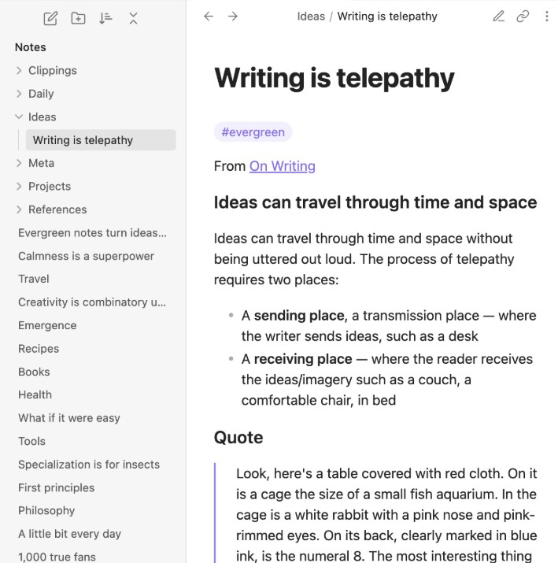

Captura tus ideas.
GhostPlanner es una plataforma pensada para capturar esas ideas que aparecen de repente y que fácilmente podrías olvidar. Te permite anotar rápidamente pensamientos, recordatorios o proyectos para que no se pierdan con el tiempo. Ideal para quienes necesitan un lugar confiable donde dejar registro de su creatividad en el momento justo.
ExplorarHerramientas
Captura instantánea.
Anotá tus ideas en el momento exacto en que aparecen, sin distracciones ni pasos innecesarios. Perfecto para cuando la inspiración no avisa.
Recordatorios amigables.
Recibí recordatorios suaves y personalizados, para que nunca olvides una idea importante sin sentirte abrumado.
Organización espontánea
Dejá que tu creatividad fluya sin límites. Organiza tus notas de forma intuitiva y flexible, según lo que necesites en cada momento.
Beneficios

Mente despejada.
Despreocupate por las ideas que surgen de repente. Capturalas rápido y liberá tu mente de distracciones.
Ideas en acción.
Transformá esas ideas espontáneas en proyectos concretos. Organiza y seguí lo que te llega al instante.
Creatividad sin límites.
Dejá que tu creatividad fluya en cualquier momento. Anotá lo que se te ocurra sin miedo a olvidarlo.
Opiniones de nuestros usuarios
GhostPlanner es la solución perfecta para el caos mental. Todo en un lugar, fácil de acceder y usar.
Juana L.
Me da mucha tranquilidad saber que mis ideas están seguras y siempre a mano. ¡Funciona perfecto!
Iara S.
¡Ya no pierdo mis ideas! Es increíblemente rápido y fácil de usar. Justo lo que necesitaba para mi día a día.
Gabriel R.
Realmente me ayudó a mejorar mi productividad. No más notas dispersas, todo en un solo lugar. Muy recomendable.
Camila V. S.
Funciona justo como promete. Anoto al vuelo y mis pensamientos quedan guardados, listos para cuando los necesite. Lo recomiendo.
Tatiana B.
Ideal para gente como yo, que tiene ideas en cualquier momento. Un par de toques y ya está guardado. Fantástico.
Ariel Z.P.